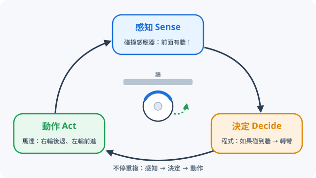
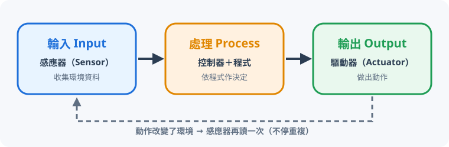
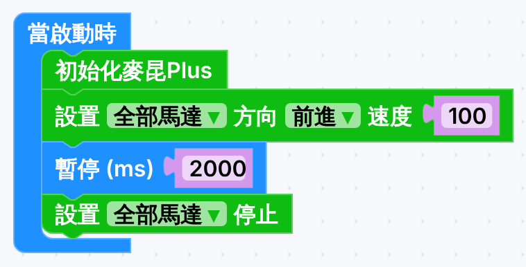
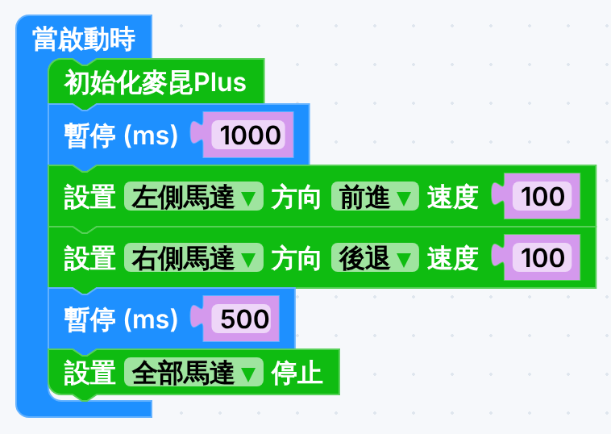
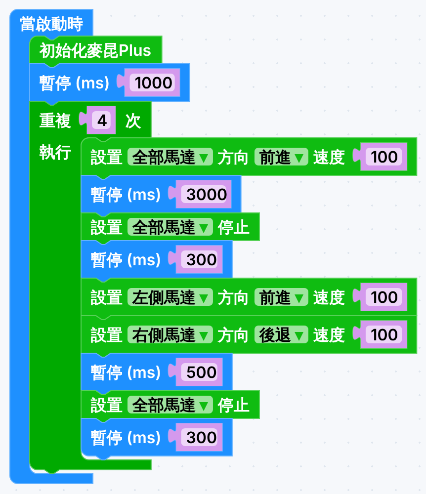

開始之前
- 用「感知、決定、動作」分辨機械人、自動化系統和普通機器。
- 用「輸入 → 處理 → 輸出」拆解一部機械人。
- 用 MakeCode 寫程式，經量度和試驗，令小車走一格地磚的正方形。
本課滿分 50 分：第一部分（概念練習）26 分；第二部分（模擬器及真車實作）24 分。選擇題以第一次作答計分，之後可以再試，是為了學習。答案會自動儲存在這部電腦。
什麼是機械人？
5 分
| 關鍵字 | 意思 | 掃地機械人的例子 |
|---|---|---|
| 感知 Sense | 用感應器「知道」周圍發生什麼事 | 碰撞感應器碰到牆 |
| 程式 Program | 事先寫好的一連串指令 | 「如果碰到牆，就轉彎」 |
| 決定 Decide | 根據感知到的資料，選擇下一步做什麼 | 決定向右轉 |
| 動作 Act | 真的動起來：移動、轉動、發聲、發光 | 右輪後退、左輪前進 |
練習 1：填寫英文定義5 分
按每一格，由字詞庫選出正確的英文字。
是機械人、自動化系統，還是都不是？
6 分很多東西都「會動」，但不是全部都是機械人。今次分三類：
| 類別 | 特點 | 例子 |
|---|---|---|
| 機械人 | 會感知、會依程式決定、會動作；通常可以改寫程式做不同工作，而且會移動或操控物件 | 工業機械手臂、掃地機械人 |
| 自動化系統 | 也會感知和自動反應，但只做一件固定的工作 | 自動門、升降機 |
| 都不是 | 不會自己感知和決定：由人即時操控，或者只會重複同一動作 | 遙控車、普通風扇 |
問自己：「它會感知嗎？」「它會自己決定嗎？」「它可以改做其他工作嗎？」
做完之後，看重點
- 會動不等於機械人：風扇只重複同一動作，不感知、不決定。
- 由人即時操控的遙控車和夾公仔機，「大腦」是人。
- 自動門和升降機會感知和自動反應，但只做一件固定的工作，所以叫「自動化系統」。有些書也會叫它們做機械人——分類有時會有爭議，最重要是講得出理由。
- 機械人造型擺設外形最像機械人，卻完全沒有感應器：樣子不是重點，會不會感知和決定才是重點。
配對：機械人和自動化系統的用途
5 分為每一項選出最合適的用途。
影片：世界人形機器人運動會
4 分2026 年 8 月，第二屆世界人形機器人運動會在北京國家速滑館「冰絲帶」舉行，有來自 16 個國家和地區的 666 支隊伍、超過 2000 個機械人參加 51 個項目。
影片一：機械人也會「失手」
邊看邊想：為什麼機械人「行路」這麼困難？它要感知什麼資料才能保持平衡？
影片二：精彩瞬間
邊看邊想：這些動作背後，機械人要靠哪些感應器和哪些驅動器？
| 100 米 | 成績 | 比較 |
|---|---|---|
| 天工 Ultra（2026 年預賽） | 9.39 秒 | 快過人類世界紀錄 9.58 秒 |
| 大型組冠軍（2026 年） | 8.64 秒 | 新華社報道 |
| 2025 年第一屆最佳 | 21.50 秒 | 一年之間快了一倍以上 |
資料來源：新華網、iThome 2026 年 8 月報道。機械人和人類的比賽規則不同，所以只可作參考。
觀後討論（每題 2 分，最少寫 15 字）
Q1 機械人在運動會上比賽，對真實生活有什麼用？
Q2 如果人形機械人進入工廠、酒店、醫院或家庭，會帶來什麼好處和問題？
寫好之後，看參考答案
Q1：比賽是最嚴格的測試場——跑、跳、跌倒後起身，都考驗平衡控制、感應器反應和即時決定，這些正是將來救災、工廠、照顧長者需要的能力。公開比賽也令各隊互相學習，技術進步得更快，又可以測出電池、關節等真實問題。
| 好處 | 問題／隱憂 |
|---|---|
|
|
科技本身沒有好壞，關鍵是人怎樣設計和使用它——這正是設計與科技科要學的設計思維。
機械人的運作：輸入 → 處理 → 輸出
6 分所有機械人（其實所有電子系統）都可以拆成三部分：

| 階段 | 掃地機械人 | 自動門 |
|---|---|---|
| 輸入 | 碰撞感應器、防跌感應器、塵埃感應器 | 紅外線感應器偵測有人接近 |
| 處理 | 晶片 + 程式：決定轉左？後退？加大吸力？ | 控制電路：有人 → 開門；5 秒沒有人 → 關門 |
| 輸出 | 車輪馬達、吸塵馬達、掃刷、提示聲 | 電動馬達拉動門 |
練習 3：這個部件屬於哪一階段？6 分
準備：認識小車和 MakeCode

器材
- 每組：麥昆 Plus V2 小車、micro:bit、USB 線、電池各 1
- 電腦（Chrome 或 Edge）、間尺或軟尺、紙膠帶
小組分工（每做完一個實驗就輪換）
1開啟 MakeCode，建立新專案
- 用 Chrome 開啟
makecode.microbit.org，按「新專案」。 - 專案名稱：
班別_學號_square（例如1A_12_square）。
2加入麥昆 Plus 擴展
- 在積木清單最下面按「擴展」。
- 整條貼上：
https://github.com/DFRobot/pxt-DFRobot_MaqueenPlus_v20，按 Enter。 - 選 maqueenPlusV2。成功後多了 3 組積木：IR、矩陣激光測距、麥昆Plus V2&V3。

擴展是跟專案的：每個新專案都要再加一次。
3今次要用的積木
| 積木 | 指令群 | 作用 |
|---|---|---|
| 當啟動時 | 基本 | 開機或按 reset 後執行一次 |
| 暫停 (ms) 100 | 基本 | 等待多少毫秒（1000 ms = 1 秒），馬達會保持上一個動作 |
| 重複 4 次 | 迴圈 | 同一組動作做 4 次（正方形有 4 條邊） |
| 初始化麥昆Plus | 麥昆Plus V2&V3 | 每個程式開頭都要加，令 micro:bit 和小車連接 |
| 設置 全部馬達 方向 前進 速度 100 | 麥昆Plus V2&V3 | 控制左、右或全部馬達的方向和速度（0–255） |
| 設置 全部馬達 停止 | 麥昆Plus V2&V3 | 停車 |
實驗一：走直線，量速度
5 分
用真車量度
- 用紙膠帶標出起點（對準車頭）。
- 下載程式（見第 9 節的步驟），拔 USB，開電源，小車立即起步。
- 量出小車走了多少 cm；再量一格地磚的邊長（多數約 60 cm，一定要自己量）。
直線時間計算器3 分
實驗二：原地轉 90°
5 分要原地轉，就要左輪前進、右輪後退（差速轉向 Differential steering）。兩輪方向相反，車就繞着兩輪中間打轉。

轉 90° 要多少毫秒沒有標準答案：電池電量、地板和車輪都有影響，要靠試驗和修正（Trial and Error）。
真車轉彎記錄表3 分
填入暫停時間和實際轉了多少度，選「太多／太少」和預計調整多少毫秒，最後一欄會算出下次應該試的數字。至少完整記錄 2 次。
組合：走一格地磚的正方形
12 分

1下載到 micro:bit
- USB 線接電腦，按左下角「下載」。
- 把
.hex檔拖到 MICROBIT 磁碟機（或先「配對裝置」，之後一按就燒錄）。黃燈閃完就完成。 - 拔掉 USB，把 micro:bit 插上小車（LED 面向前），車放在地磚一角，車頭對正磚縫。
- 開電源，小車 1 秒後起步。想重試就按 micro:bit 背面的 reset 鍵。
用 iPad？
iPad 不能用 USB 下載。請用「micro:bit」app：先用藍牙配對 micro:bit（按住 A+B 再按 reset，見到圖案後依 app 指示），然後在 app 內開啟 MakeCode 專案並按「Flash」傳送。
2除錯（Debugging）
| 現象 | 可能原因 | 解決方法 |
|---|---|---|
| 完全不動 | 電源未開、電池弱、micro:bit 未插好 | 開電源、換電池、重新插好 |
| 下載了卻沒反應 | 忘記「初始化麥昆Plus」 | 在「當啟動時」第一行加上它 |
| 只有一邊車輪轉 | 直行時用了「左側／右側馬達」 | 直行要選「全部馬達」 |
| 一直向前不停 | 忘記「暫停」或「停止」 | 每個動作後補上暫停 ＋ 停止 |
| 走成菱形 | 轉彎時間不準 | 每次加減 50 ms |
| 越走越歪 | 左右馬達力度不同、電池弱 | 快的一邊速度調低（100 → 95），或換電池 |
自我檢查2 分
挑戰（做得快的同學，不計分）
- 三角形：改成走正三角形。每次要轉多少度？「重複」要改成幾次？
- 變數：建立變數
邊長時間和轉彎時間，之後只改一個數字就能調整整個程式。 - 大正方形：走 2 × 2 格地磚的大正方形，只准改一個數字。
- 提示燈：每轉完一個角，就在 LED 顯示 1、2、3、4，或者開前燈一下。
總結、詞彙及學習日誌
2 分- 機械人能感知環境 → 依程式作決定 → 執行動作；自動化系統只做一件固定的工作。
- 會動的不一定是機械人（風扇、遙控車），像機械人的也不一定是（擺設）。
- 任何機械人都可拆成輸入（感應器）→ 處理（控制器＋程式）→ 輸出（驅動器）。
- 今次的小車只靠計時走正方形，它不知道自己走成怎樣——這叫開環控制。下一課會加上感應器。
| 中文 | English | 中文 | English |
|---|---|---|---|
| 機械人 | Robot | 自動化 | Automation |
| 感應器 | Sensor | 驅動器 | Actuator |
| 輸入／處理／輸出 | Input / Process / Output | 微控制器 | Microcontroller |
| 程式 | Program | 迴圈 | Loop |
| 除錯 | Debugging | 差速轉向 | Differential steering |
學習日誌（最少 20 字）
今課最難的是什麼？你怎樣解決？模擬器和真車有什麼分別？
成績及交功課
繳交：下載成績報告（檔名例如 DT_F1_L1_1A_12_陳大文.html），連同 MakeCode 分享連結，上傳到 Google Classroom／eClass。